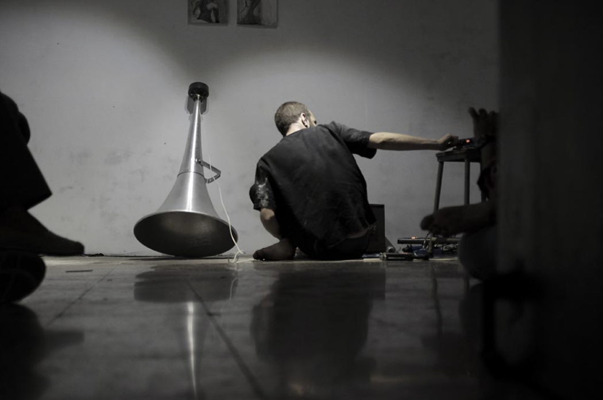
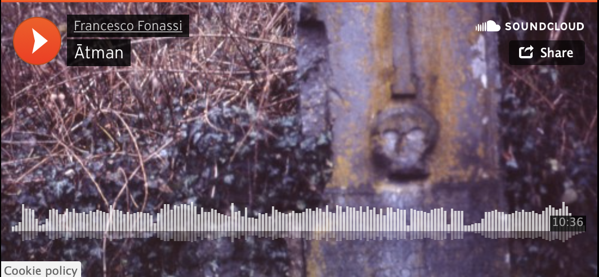

FRANCESCO FONASSI
Commencer l’édition par une installation, plutôt qu’un concert. C’était l’idée. Mais l’artiste italien a choisi d’expérimenter autre chose: trois parties qu’il réunit pour la première fois en un seul set. Disloquées dans la salle, trois performances s’enchaîneront, l’une avec la sono, l’une autre via un ampli bass, et finalement via un transducer placé sur les barres métaliques au plafond de la salle. Chacune des parties provient de ses expériences et installations explorant les relations de séparations qu’on entretient entre réalité et perception, corps et pensée, activité et passivité. Pour Fonassi, l’acte d’écoute y possède le rôle de pivot, de seuil où les certitudes vascillent. Au LUFF, il jouera avec les objets visibles de la salle et la simulation de phénomènes audio-visuels.

